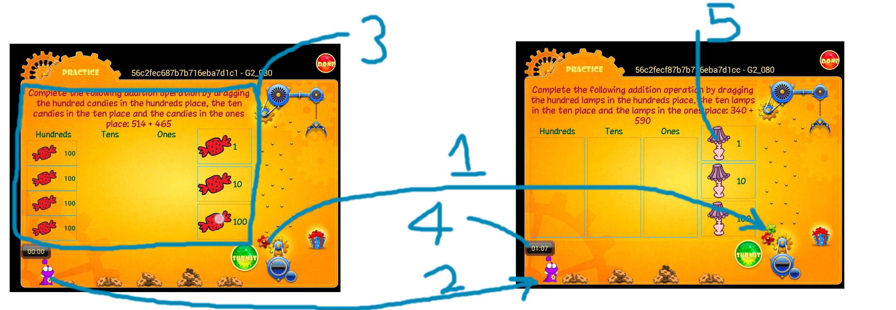

-
The number of gears here changes after child completes appropriate
amount of practice. (There are a total of 20 gears, and there are images
with 1 gear marked, 2 gears marked, and so on)
-
Drago (the mascot) will jump up and award a gear to the child. After
awarding, the gear will disappear, and the stack might move forward as in
the above case. (See point 4 for clearer understanding)
-
This is the question area. These are called WIDGETS, and I implemented
fragments which can be loaded in this part of the screen ONLY. They can
be images of arbitrary height and width, or they can be drag-and-drop
enabled (like in the present case)
-
This timer is the session timer for the child. Each stack of gears is
associated with a preset time as decided by the parent. After this timer
is over, Drago will jump, award the gear and the stack will DISAPPEAR
-
In this particular widget, the objects to be dragged and dropped are
images stored in Amazon S3. I have used Universal Image Library to load
and cache them, and I have to make sure that there are no more than 10
objects of each type that the child can drag and drop.